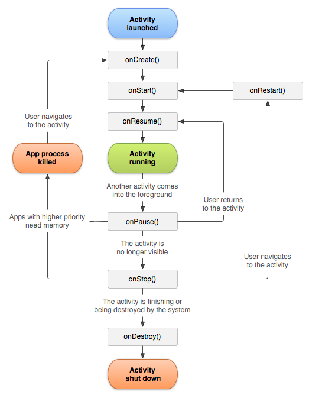

- The entire lifetime of an activity happens between the call to onCreate() and the call to onDestroy(). Activities perform setup of "global" state (such as defining layout) in onCreate(), and release all remaining resources in onDestroy().
- The visible lifetime of an activity happens between the call to onStart() and the call to onStop(). During this time, the user can see the activity on-screen and interact with it. The system might call onStart() and onStop() multiple times during the entire lifetime of the activity, as the activity alternates between being visible and hidden to the user.
- The foreground lifetime of an activity happens between the call to onResume() and the call to onPause(). During this time, the activity is in front of all other activities on screen and has user input focus. An activity can frequently transition in and out of the foreground.
Figure below depicts
Activity Lifecycle:

Note:
Portions of this page are modifications based on work created and shared by the Android Open Source Project and used according to terms described in the Creative Commons 2.5 Attribution License.
For more information,
click here to original source page.